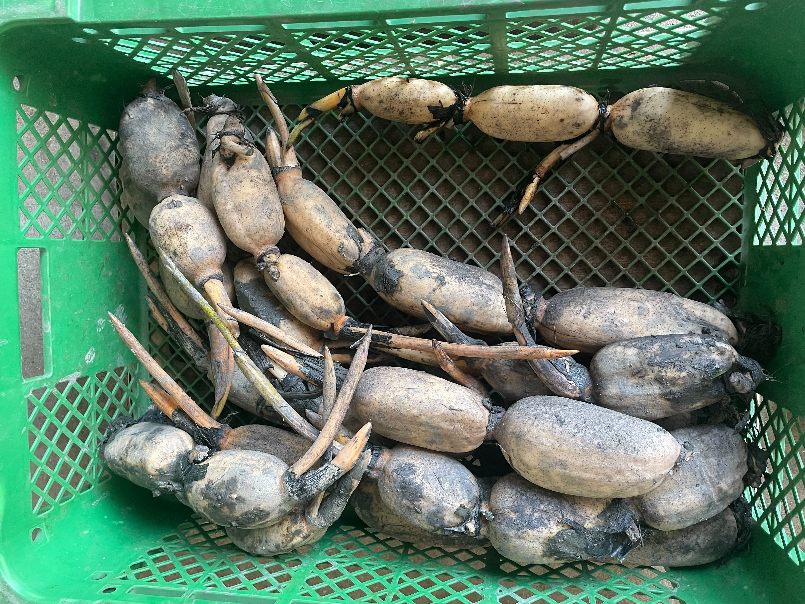
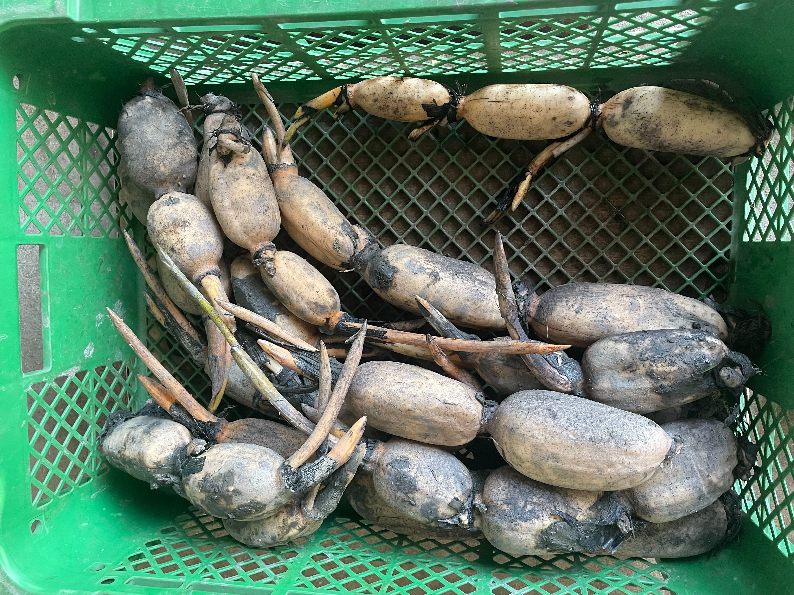
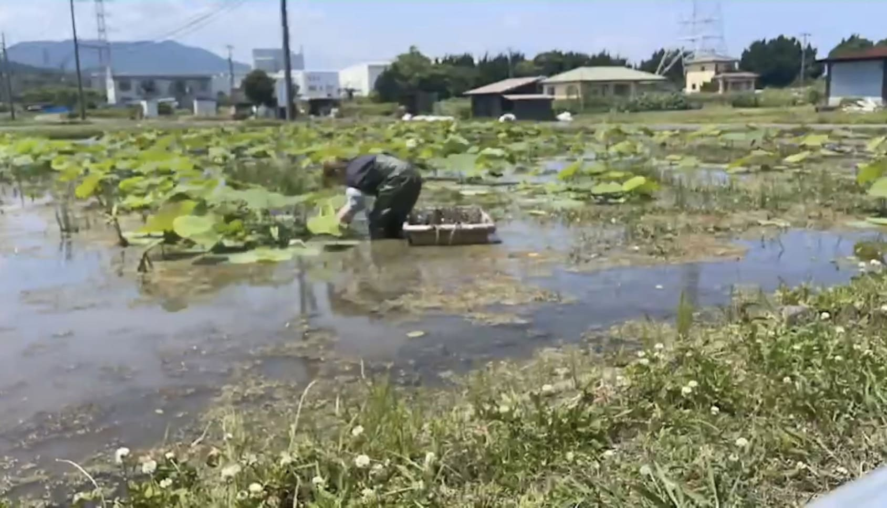
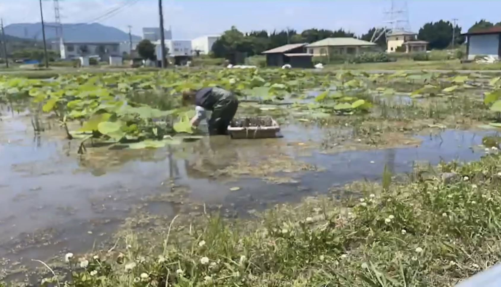

土壌に元肥をまき、代かきで土を柔らかくして均一にならします。こうすることで、種レンコンが植えやすくなり、水を均一に張ります。
植え付けは手作業で行います。
 


水管理
植え付け後は水管理が重要です。水切れをおこすと生育が悪くなったり、雑草が生えやすくなったりします。
また、高水温は腐敗病を誘発しやすいので、夏場は水をかけ流したりして、できるだけ水温を下げるようにします。
除草
藻や雑草が生えてきたら、レンコンの新芽に絡んで成長を妨げたり害虫の発生につながる可能性があるため、手で取り除きます。

 

レンコンの収穫は重労働であり熟練の技が必要です。
夏は水を張ったままおこなう「水ぼり」をします。水ぼりでは、水圧ホースを使ってレンコンを掘り出します。


冬は水を抜いた状態で収穫する「鍬ぼり」をします。
鍬ぼりは水を抜いてから表層15〜30cm程度の土を専用の機械で取り除き、手作業で土を掘りながらレンコンを収穫します。
水ぼりに比べると作業時間がかかりますが、泥をつけたままの新鮮なレンコンが収穫できるのが特徴です。